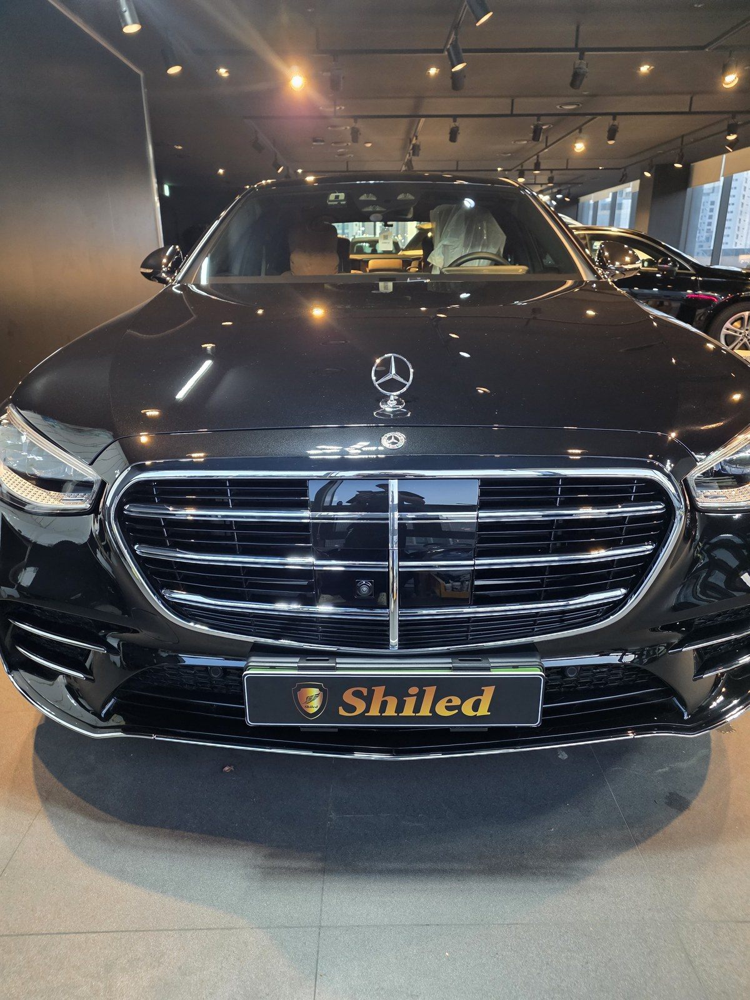
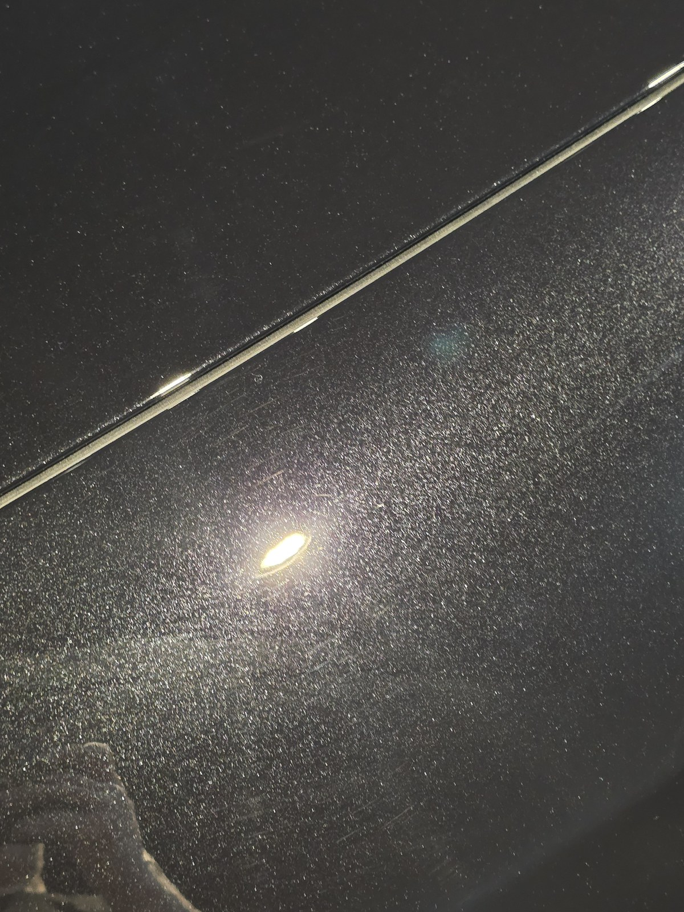
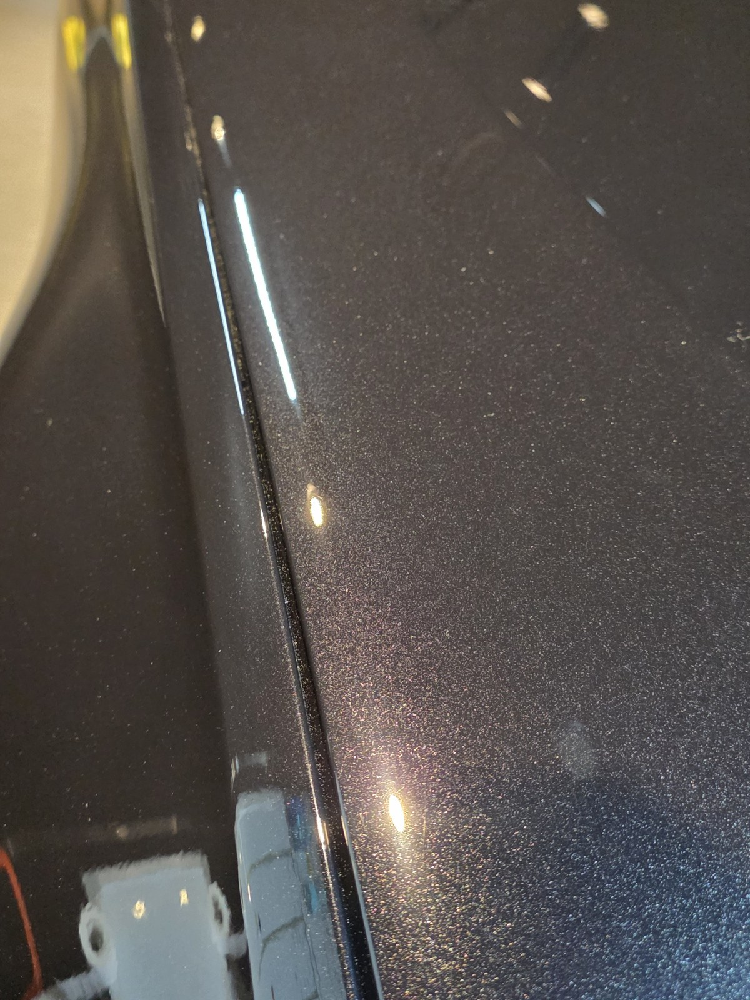
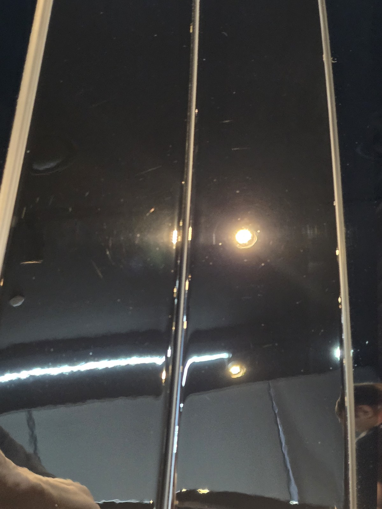
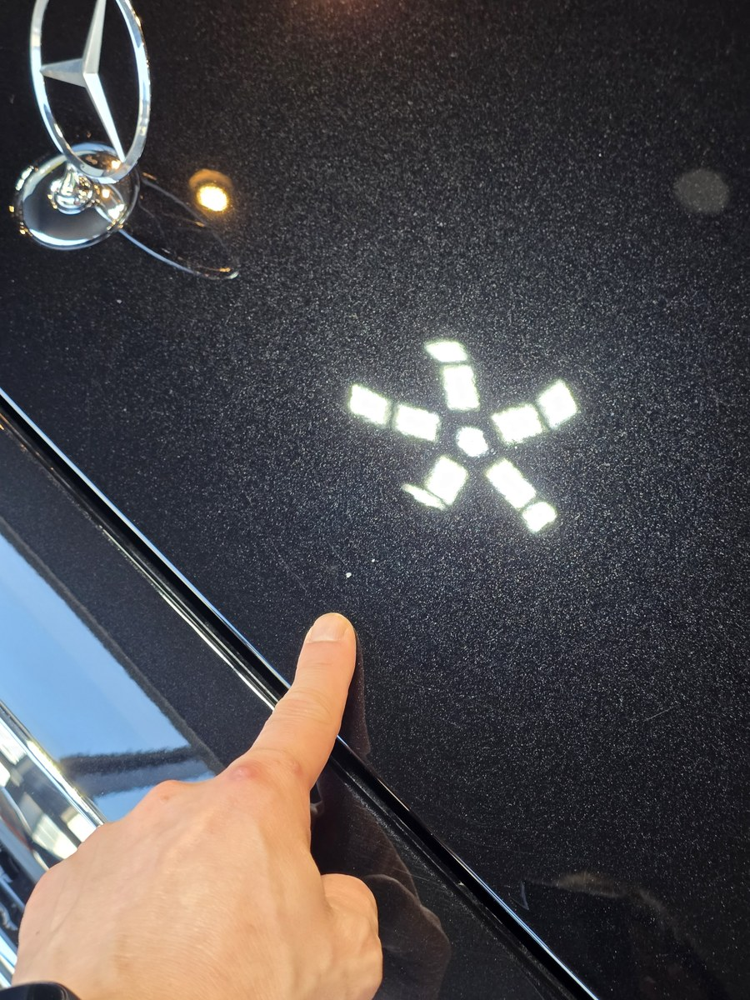
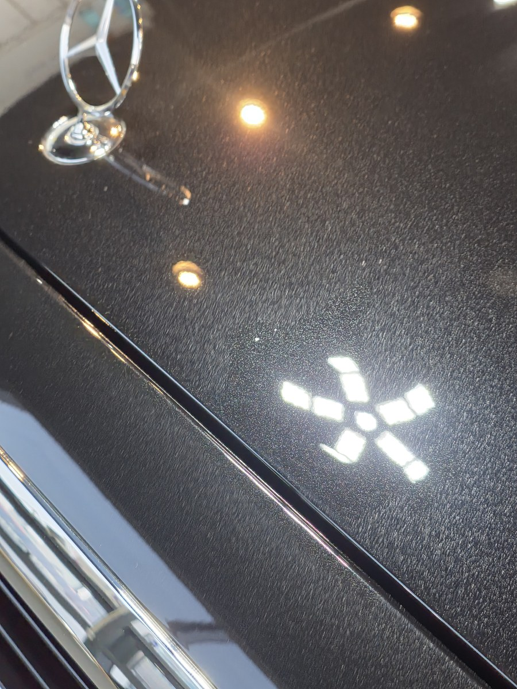
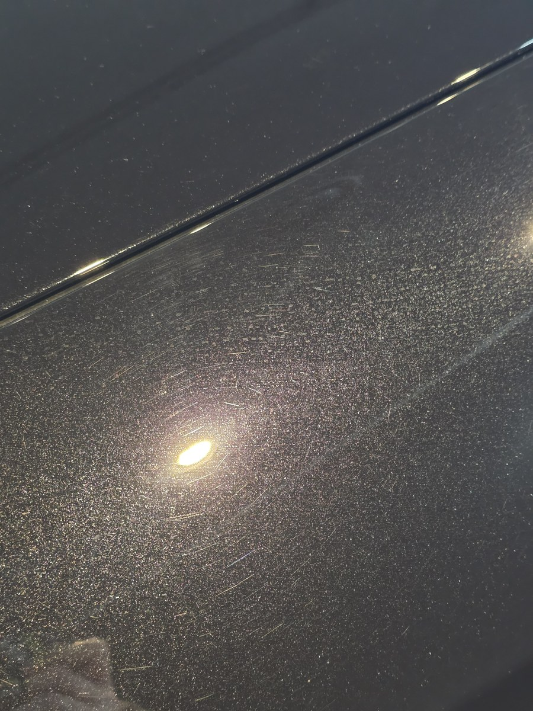

부산 쉴드광택에 들어온 벤츠 S500입니다. 메탈릭 블랙 바디입니다.
이 차는 빛만 받으면 떠오르던 스월 잔기스를 광택으로 걷어내는 작업을 했습니다.

검정차는 왜 잔기스가 유독 잘 보이나
메탈릭 블랙은 빛을 흡수하다 반사하는 색입니다. 그래서 표면의 미세 스월이 그대로 드러납니다.
흰색이나 은색이면 묻혀버릴 잔기스도, 검정에서는 조명 아래 그물처럼 떠오릅니다.
입고 직후 조명을 비추니 도장면 위로 거미줄 같은 잔기스가 깔려 있었습니다. 세차하며 쌓인 전형적인 미세 스월입니다.

광택은 무조건 세게 깎는 게 정답이 아닙니다
잔기스를 없앤다고 클리어코트(도장면 맨 위 보호막)를 마구 깎으면, 정작 도장 수명을 깎는 일이 됩니다.
그래서 잔기스 깊이를 보고 필요한 만큼만 컴파운드와 패드를 맞춰 깎습니다. 16년간 직접 시공하며 잡아온 감각입니다.
기술자의 팁
메탈릭 블랙은 잔기스도 잘 보이지만, 광택을 잘못하면 새 자국(홀로그램)도 가장 잘 드러나는 색입니다. 그래서 검정일수록 마무리 패드로 한 단계 더 다듬어 끝냅니다.
광택 전, 전처리가 먼저입니다
표면을 깎기 전에 바탕부터 깨끗해야 합니다.
디테일링 세차로 표면 오염을 걷어내고, 철분 제거제로 박힌 쇳가루를 녹여냅니다. 이 단계를 건너뛰고 바로 광택을 돌리면, 박혀 있던 쇳가루가 패드에 끌려 새 잔기스를 만듭니다. 눈에 안 보이는 오염까지 잡는 게 퀄리티의 시작입니다.
마감 후
패널 위로 조명이 또렷하게 맺힙니다.
왜곡 없이 떨어지는 반사가, 광택으로 표면을 평탄하게 잡았다는 증거입니다. 메탈릭 블랙 특유의 깊은 색이 잔기스에 가려지지 않고 그대로 살아났습니다.


광택 전후, 같은 자리가 어떻게 달라지나
말로 "잔기스를 걷어냈습니다"라고 하는 것보다, 같은 자리를 전후로 비교하는 게 정확합니다.
아래 사진은 작업 전과 작업 후에 같은 위치를 같은 조명 아래에서 찍은 것입니다.


같은 헥사 조명 — 흩어지던 빛이 또렷한 모양으로 맺힙니다

스팟 조명 둘레 — 빛을 받으면 가장 티가 나는 부위라 차이가 큽니다
광택 후, 이렇게 관리하세요
광택으로 표면을 정리해도, 관리가 거칠면 잔기스는 다시 쌓입니다.
자동세차(기계세차)는 브러시가 잔기스를 만드니 피하시는 게 좋습니다. 정리한 상태를 오래 유지하고 싶으시면, 광택 위에 유리막코팅으로 보호막을 한 겹 올리는 방법을 권합니다. 코팅막이 세차 잔기스를 늦춰줍니다.
자주 묻는 질문
Q. 검정차는 왜 잔기스가 유독 잘 보이나요?
A. 메탈릭 블랙은 빛을 흡수하다 반사하는 색이라 미세 스월이 그대로 드러납니다. 흰색·은색이면 묻힐 잔기스도 검정에선 조명 아래 그물처럼 떠오릅니다. 그래서 광택 효과가 가장 크게 보이는 색입니다.
Q. 스월 잔기스는 왜 생기나요?
A. 대부분 세차 과정에서 생깁니다. 마른 먼지를 문지르거나, 거친 타월로 닦거나, 자동세차를 거치면 미세한 긁힘이 쌓입니다. 이 긁힘이 빛을 흩어 거미줄처럼 보이는 게 스월입니다.
Q. 광택을 하면 도장이 얇아지지 않나요?
A. 필요한 만큼만 깎습니다. 클리어코트 두께를 보고 잔기스 깊이에 맞춰 컴파운드와 패드를 조절합니다. 무조건 세게 깎는 게 정답은 아닙니다.
Q. 광택만 하고 코팅은 안 해도 되나요?
A. 광택만 해도 표면은 깨끗해집니다. 다만 보호막이 없으면 세차하며 잔기스가 다시 쌓입니다. 정리한 상태를 오래 유지하려면 광택 후 유리막코팅을 함께 권합니다.
Q. 쉴드광택 위치와 예약은 어떻게 하나요?
A. 부산 남구 유엔로220 1F 쉴드광택입니다. 예약·상담은 010-3384-1850, 대표 최한중이 직접 상담하고 책임 시공합니다.
잔기스는 빛을 받을 때만 보입니다. 그래서 평소엔 모르고 지나칩니다.
제품을 직접 만드는 사람이 직접 시공합니다.
부산에서 광택·유리막코팅을 고민 중이시면 편하게 연락 주십시오.
어떤 차를 타냐보다 어떻게 타냐가 중요합니다~!
📞 010-3384-1850 견적 문의쉴드광택 · 부산 남구 유엔로220 1F · 대표 최한중